New England
Rhode Island
WaterFire Providence
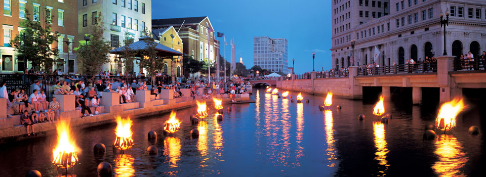 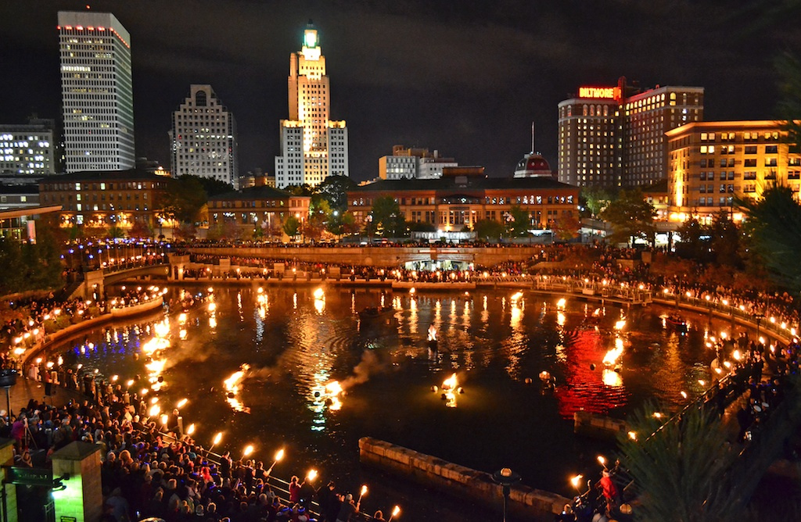 WaterFire is the award-winning sculpture by Barnaby Evans presented on the rivers of downtown Providence, RI. It was first created by Evans in 1994 to celebrate the tenth anniversary of First Night Providence, and has since become an annual public art phenomenon. WaterFire is simultaneously a free public art installation, a performance work, an urban festival, a civic ritual, and a spiritual communal ceremony, well known nationally and internationally as a community arts event. WaterFires symbolism and interpretation is both inclusive and expansive reflecting the recognition that individuals must act together to strengthen and preserve their community. On WaterFire evenings, downtown Providence is transformed by one hundred fires that burn just above the surface of the rivers that flow through Waterplace Park (the Woonasquatucket river) and the middle of downtown Providence (the Moshassuck and Providence rivers). The public is invited to come and walk the riverfront and enjoy the beauty of the flickering firelight, the fragrant scent of aromatic wood smoke, the changing silhouettes of the volunteer firetenders, and the music from around the world each of which engages the senses and emotions of all who stroll the paths of Waterplace Park and the walkways along the banks of the rivers. Average attendance is 40,000 a night, ranging from 10,000 to 100,000. WaterFire is presented for free, with only ten percent of the funds needed to host WaterFire acquired through governmental means and the remainder coming from private and corporate donations.
Massachusetts
Six Flags New England
 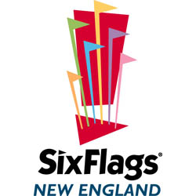
Six Flags New England is the Coaster Capital of New England and we have taken that reputation to the next level with the opening of Fireball in 2016. Fireball will offer the ultimate in adrenaline and thrills as the theme park continues to introduce the latest in ride technology for its guests in New England. This only adds to Six Flags New England's already impressive lineup of rides including: New England SkyScreamer, Flashback, Pandemonium, Mind Eraser, Batman the Dark Knight, Goliath, and Wicked Cyclone. The park is also thrilled to announce a change to the iconic steel coaster BIZARRO. The ride will be relaunched as SUPERMAN the Ride in spring 2016 and thrill-seekers will not
want to miss this heroic coaster as SUPERMAN regains his title at the Coaster Capital of New England. When it comes to fun for the little ones, Six Flags New England offers four areas dedicated to children including Looney Tunes Movie Town, Kidzopolis, Whistlestop Park and Splash Island. Six Flags New England is also home to New Englands largest water park, Hurricane Harbor. Hurricane Harbor offers a tropical oasis in the middle of New England with two sandy beaches, two wave pools, numerous slides and a lazy river that will float all of your worries away. All of this is included FREE with your park admission, two parks for the price of one!
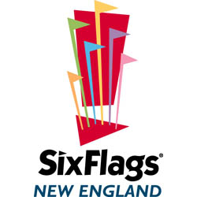
Six Flags New England is the Coaster Capital of New England and we have taken that reputation to the next level with the opening of Fireball in 2016. Fireball will offer the ultimate in adrenaline and thrills as the theme park continues to introduce the latest in ride technology for its guests in New England. This only adds to Six Flags New England's already impressive lineup of rides including: New England SkyScreamer, Flashback, Pandemonium, Mind Eraser, Batman the Dark Knight, Goliath, and Wicked Cyclone. The park is also thrilled to announce a change to the iconic steel coaster BIZARRO. The ride will be relaunched as SUPERMAN the Ride in spring 2016 and thrill-seekers will not
want to miss this heroic coaster as SUPERMAN regains his title at the Coaster Capital of New England. When it comes to fun for the little ones, Six Flags New England offers four areas dedicated to children including Looney Tunes Movie Town, Kidzopolis, Whistlestop Park and Splash Island. Six Flags New England is also home to New Englands largest water park, Hurricane Harbor. Hurricane Harbor offers a tropical oasis in the middle of New England with two sandy beaches, two wave pools, numerous slides and a lazy river that will float all of your worries away. All of this is included FREE with your park admission, two parks for the price of one!
Connecticut
Foxwoods Resort Casino
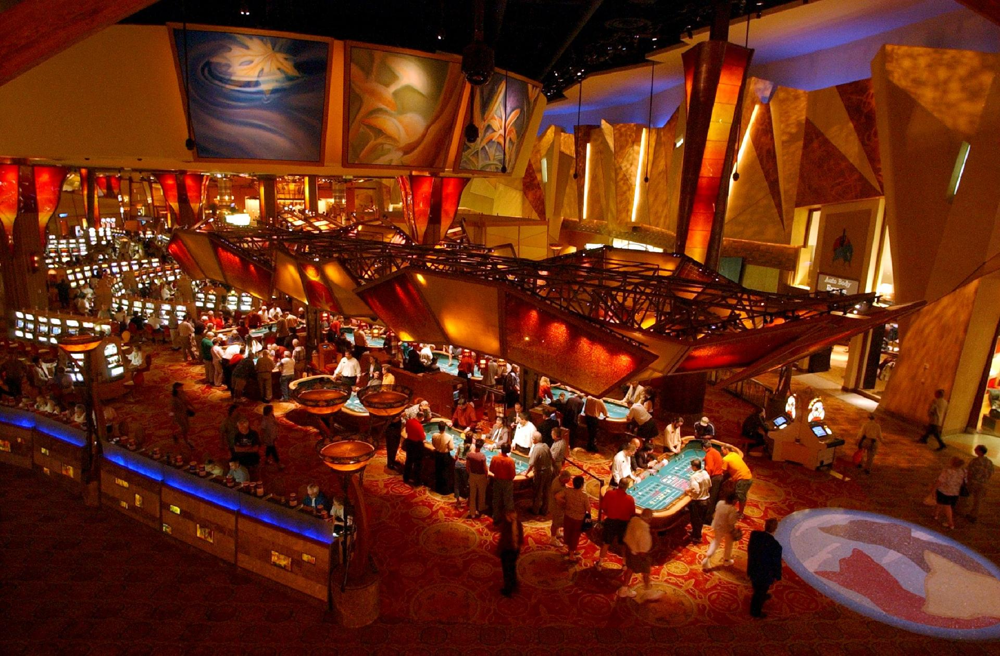 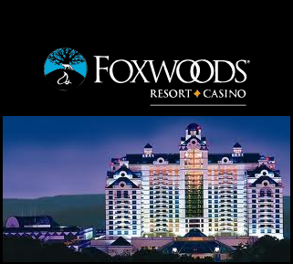 Foxwoods Resort Casino is one of the premier hotel, gaming, shopping and entertainment destinations in the Northeast. As the largest resort casino in North America, Foxwoods offers a vast array of gaming in six casinos; AAA Four-Diamond hotels, restaurants from gourmet to express, world-renowned spas, awarding-winning golf, state-of-the-art theaters, and exclusive retailers. Perfect for both recreation and business, Foxwoods provides modern and versatile convention and meeting space to infuse new life into any meeting or event. At Foxwoods, you can be anyone and do everything with endless possibilities of experiences that are Anything but Ordinary. Foxwoods Resort Casino is owned and operated by the Mashantucket Pequot Tribal Nation. For a comprehensive look at Foxwoods Resort Casino and Mashantucket Pequot Tribal Nation visit Foxwoods.com. The Mashantucket Pequots are a native Algonquin people in Southeastern Connecticut known for their Pequot spirit of survival. Their unprecedented story can be relived in vivid detail at the Tribes world-renowned Mashantucket Pequot Museum and Research Center. The tenacity of the Mashantucket Pequots brought them through centuries of persecution to economic prominence today. Since opening one of the first Native American gaming halls in the country in 1986, the Mashantucket Pequot Tribal Nation (MPTN) has also developed a host of lucrative economic ventures including the Lake of Isles Golf Course and the Spa at Norwich Inn. The MPTN is one of Connecticuts highest state tax payers and largest employers. The Tribe provides significant financial contributions to state and local nonprofit organizations that support neighboring communities. For a comprehensive look the Mashantucket Pequot Tribal Nation
New Hamshire
White Mountain Skiing
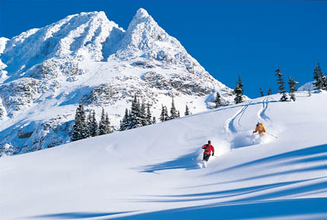 Jackson Ski Touring Foundation presents state of the art grooming on trails designed to suit every taste and ability, whether you prefer quiet striding through old growth New England forest or all out skate skiing and an international race course. You can visit on-trail destinations: the warming cabin and Cocoa Cafe on the Ellis River Trail and numerous eateries and pubs and inns. All this is contained within a charming New England village that takes pride in its long established traditions of great skiing and warm hospitality. Foundation trails also connect with A.M.C trails in Pinkham Notch and White Mountain National Forest backcountry adventure trails. The Foundation operates under a Special Use Permit with the White Mountain National Forest, and with the cooperation of 76 private landowners, and the town of Jackson. The Foundation maintains a courtesy patrol to assist you on the trails if needed and rescue service staff trained and certified with the National Ski Patrol System (NSP). Everyone using the trails must purchase a trail pass or be a season pass holder. Annual member benefits include: unlimited trail use for the season; a series of newsletters with current club programs and events; the Kilometer card program with incentives to ski new trails or more demanding distances; a comprehensive calendar of events; club member car window decal; free parking; use of day space and wax room.
Maine
White Water Rafting
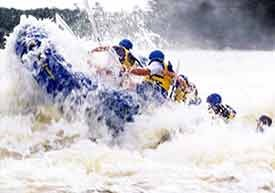 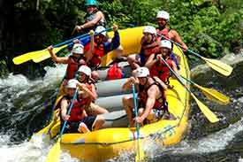 Three Rivers Whitewater is now in its 18th season. Thats right! 18 years of professionally-led, safe and fun white water rafting trips on Maine's Kennebec River, Dead River and Penobscot River for Families, Friends and Groups. Over that time the Three Rivers crew has continued growing our services and amenities to provide you with the best white water rafting trips in Maine. Our facilities today include two resort locations, The Forks Outdoor Fun Resort and The Penobscot Outpost in Millinocket, Maine. Both facilities have everything you need for an extraordinary rafting vacation: white water rivers, a variety of lodging options, The Boatman's Bar and Grill and nightlife as well as many other activities. We also include the Inn By The River and Kennebec Riverside Cabins in our lodging and dining options!
Vermont
Ben & Jerry's Factory Tour
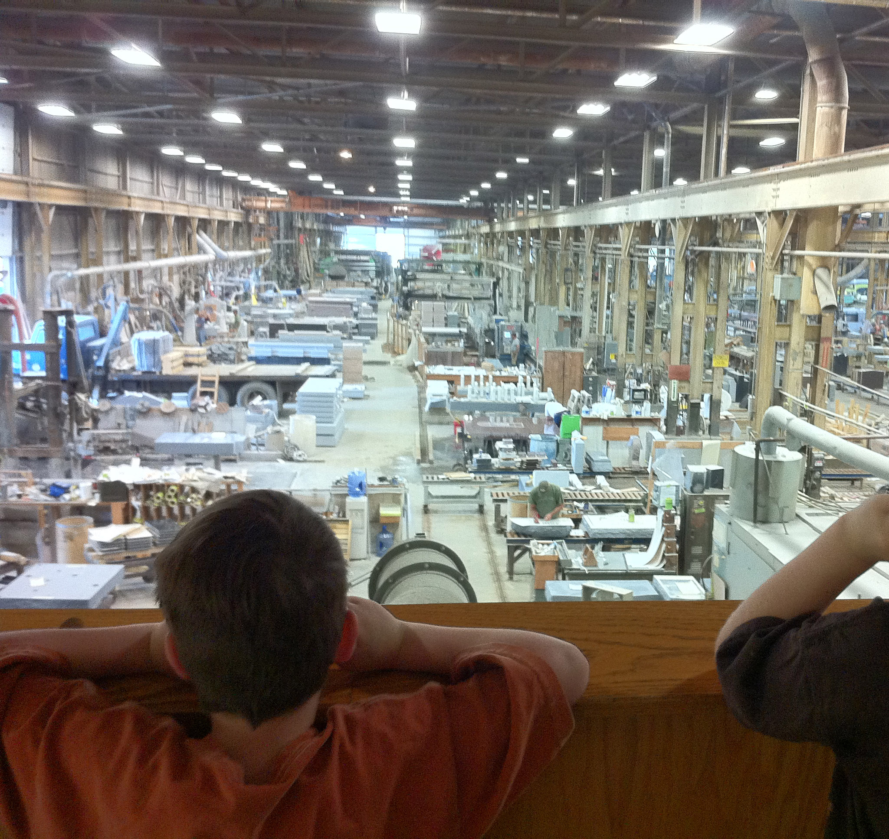 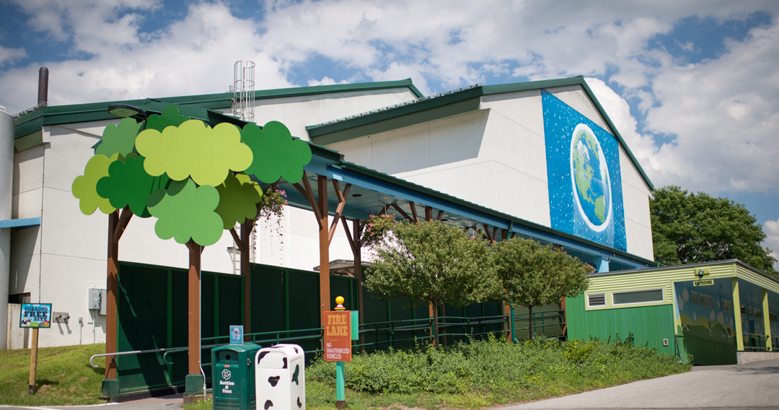 Our 30-minute guided ice cream factory tour is fun and educational for all ages. We offer guests the opportunity to learn about our ice cream manufacturing process and explain how we incorporate values-led decisions that drive our business. We know that getting your favorite flavor or trying a new one is priority at the factory, so our full service scoop shop menu includes special items (hello, Vermonster!) as well as traditional favorites (like waffle cones and hot fudge sundaes!). Can't decide? Our scoopers are equipped to offer suggestions and sample tastes. Gift items from hats to t-shirts, beach towels to flavored lip balms, and oodles more of all things Ben & Jerry's can found in our Gift Shop. Cap off your visit with a stop in our Flavor Graveyard to pay your respects to our dearly de-pinted, retired flavors. We hope to see you soon at the factory! There's also a lot of other great attractions in Vermont especially at the height of foliage season in the fall.